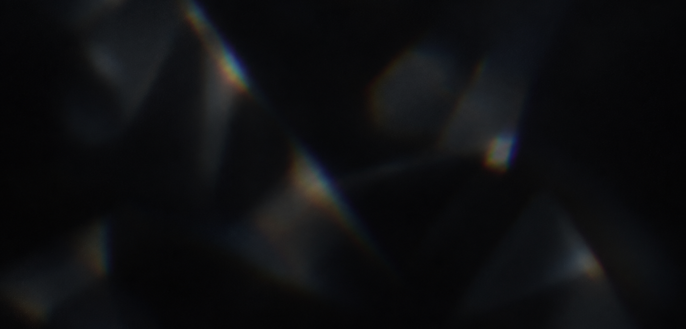

Readable output,
live in your terminal.
PrismTTY colors the output already flowing through your shell, SSH sessions, pipes and logs.
brew install inxbit/tap/prismtty
edge-sw1#show interfaces description Gi1/0/1 up up Uplink to core-rtr Gi1/0/2 down down Spare access port Po10 up up Bundle to dist-a edge-sw1#show ip route ospf O 192.0.2.0/24 [110/20] via 198.51.100.1, Vlan1191
edge-sw1#show interfaces description Gi1/0/1 up up Uplink to core-rtr Gi1/0/2 down down Spare access port Po10 up up Bundle to dist-a edge-sw1#show ip route ospf O 192.0.2.0/24 [110/20] via 198.51.100.1, Vlan1191
-
Follows every hop
One wrapped shell switches profiles as you ssh from device to device, and back again on exit.
-
Nine built-in profiles
Cisco, Juniper, Fortinet, Palo Alto, Arista, Aruba CX, Versa and Linux, on a generic base.
-
Nothing stored by default
No network code and no telemetry. Output is never written unless you ask for a trace.
One shell follows every hop.
Start one wrapped shell with ptty /bin/zsh and keep your usual ssh, telnet and console habits. When a login banner or prompt matches after you jump, PrismTTY switches to that vendor's profile. When the connection closes, it switches back.
-
linux-unix
ops@workstation:~$ ssh admin@edge-sw1.example.net -
linux-unix push cisco
edge-sw1#show ip interface brief Interface IP-Address OK? Method Status Protocol GigabitEthernet1/0/1 192.0.2.1 YES manual up up GigabitEthernet1/0/2 unassigned YES unset administratively down down Vlan1191 198.51.100.1 YES manual up up edge-sw1#ssh -l admin core-rtr.example.net
-
linux-unix cisco push juniper
admin@core-rtr> show interfaces terse ge-0/0/* Interface Admin Link Proto Local ge-0/0/0 up up ge-0/0/0.0 up up inet 192.0.2.2/30 ge-0/0/1 up down admin@core-rtr> exit
-
linux-unix cisco pop
juniperConnection to core-rtr.example.net closed. edge-sw1#
ssh, telnet, screen or a serial console when the banner or prompt matches, and popped when the connection closes.Nine built-in profiles, written clean-room.
Each profile knows how its platform writes prompts, interfaces, addresses, protocol state, counters and syslog severity. The generic profile underneath covers IPv4, IPv6, MAC addresses and common state words everywhere.
LAB-IOS-01#show version Cisco IOS XE Software, Version 17.09.04 LAB-IOS-01#show interfaces description Interface Status Protocol Description Gi1/0/1 up up Uplink to LAB-CORE Gi1/0/2 down down Spare access port Po10 up up Bundle to DIST-A Vlan1191 up up Synthetic users VLAN LAB-IOS-01#show ip route O 192.0.2.0/24 [110/20] via 198.51.100.1, 00:00:14, Vlan1191 B 203.0.113.0/24 [20/0] via 198.51.100.2, 00:01:02
lab@mx-lab-01> show version Junos: 22.4R3.8 lab@mx-lab-01> show interfaces descriptions Interface Admin Link Description ge-0/0/0 up up Transit to lab core xe-7/0/2 down down Spare optic reth1.808 up up Synthetic trust segment st0.9 up up Synthetic VPN tunnel lab@mx-lab-01> show route protocol ospf 192.0.2.0/24 *[OSPF/10] 00:01:20, metric 20 > to 198.51.100.1 via ge-0/0/0.0
FGT-LAB-01 # get system status Version: FortiGate-VM64 v7.4.3,build2573 Hostname: FGT-LAB-01 FGT-LAB-01 # get system interface == [ port1 ] name: port1 mode: static ip: 192.0.2.10 255.255.255.0 status: up == [ port2 ] name: port2 mode: dhcp ip: 0.0.0.0 0.0.0.0 status: down FGT-LAB-01 # get router info routing-table all S* 0.0.0.0/0 [10/0] via 192.0.2.1, port1 O 198.51.100.0/24 [110/20] via 192.0.2.2, port1
admin@pa-lab-01> show system info hostname: pa-lab-01 model: PA-VM sw-version: 11.1.0 admin@pa-lab-01> show interface all name id vsys zone forwarding tag address ethernet1/1 16 1 untrust vr:default 0 192.0.2.10/24 ethernet1/2.1191 17 1 trust vr:default 1191 198.51.100.10/24 tunnel.10 20 1 vpn vr:default 0 203.0.113.10/32 admin@pa-lab-01> show routing route S 0.0.0.0/0 [10/0] via 192.0.2.1, ethernet1/1
ceos-lab-01#show version Arista cEOSLab Software image version: 4.36.0F ceos-lab-01#show interfaces description Interface Status Protocol Description Ethernet1 up up Spine uplink Et2 down down Spare lab link Port-Channel10 up up MLAG peer-link Vlan1191 up up Synthetic client vlan ceos-lab-01#show ip route O 192.0.2.0/24 [110/20] via 198.51.100.1, Ethernet1
LAB-ARUBA-01# show version ArubaOS-CX 10.13.1000 LAB-ARUBA-01# show interface brief Interface Status Protocol Description 1/1/1 up up Core uplink 1/1/2 down down Spare copper lag10 up up Access aggregate vlan1191 up up Synthetic wireless vlan LAB-ARUBA-01# show events 2026-05-07T12:00:00.000000+00:00 LAB-ARUBA-01 hpe-restd[2529]: Event|7708|LOG_INFO|AMM|1/1|Certificate example accepted
admin@versa-lab-01> show system details Appliance Name: versa-lab-01 Software Version: 22.1.4 admin@versa-lab-01> show interfaces brief NAME TYPE ADMIN OPER VRF IP vni-0/0 ethernet up up global 192.0.2.20/24 tvi-0/332 tunnel up up TenantA 198.51.100.20/30 ptvi-1 tunnel down down TenantA - admin@versa-lab-01> show route table TenantA 203.0.113.0/24 via 198.51.100.21 tvi-0/332
root@linux-lab:~# hostnamectl Operating System: Ubuntu 24.04.4 LTS Kernel: Linux 6.8.0-110-generic root@linux-lab:~# ip -br addr lo UNKNOWN 127.0.0.1/8 ::1/128 ens18 UP 192.0.2.50/24 root@linux-lab:~# ss -tulpen tcp LISTEN 0 4096 0.0.0.0:22 0.0.0.0:* users:(("sshd",pid=101,fd=3)) udp UNCONN 0 0 127.0.0.53:53 0.0.0.0:* users:(("systemd-resolve",pid=88,fd=13)) root@linux-lab:~# systemctl --failed UNIT LOAD ACTIVE SUB DESCRIPTION
Real PrismTTY output over the synthetic fixtures in the repository: invented hosts, documentation-range addresses. Colors are each profile's defaults; every rule can be changed in your own config.
Up and highlighting in one line.
macOS and Linux. Homebrew installs prismtty, ptty and ct, shell completions and the PCRE2 dependency. Cargo needs Rust 1.85 or newer, PCRE2 and pkg-config.
brew install inxbit/tap/prismtty
cargo install prismtty
ptty /bin/zsh
Live terminal highlighting, not device management.
What it colors
- Prompts
- Interfaces
- Addresses: IPv4, IPv6, MAC
- Protocol and operational state
- Syslog severity
- Counters and vendor terms
In output that already reaches your terminal. Existing ChromaTerm configs load as they are, and ct keeps the old command name working.
What it never does
- Log in to devices
- Collect inventory
- Push configuration
- Store operational data
- Open a network connection
Not an NMS, a configuration tool, a source of truth, a SIEM, a log platform or an inventory system. The binary has no network code.
Profile coverage improves with real-world testing.
Feedback wanted from real sessions, especially on these platforms and on custom profiles for other vendors and appliances. Strip hostnames and addresses before you paste.
- Cisco IOS, IOS XE, IOS XR, NX-OS, ASA
- Juniper Junos
- Fortinet FortiOS
- Palo Alto PAN-OS
- Arista EOS
- Aruba CX
- Versa
- Linux and Unix